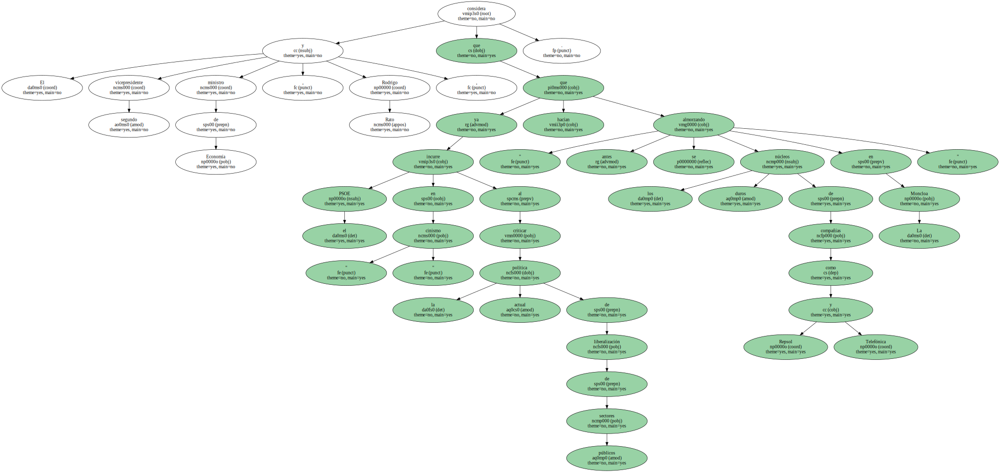
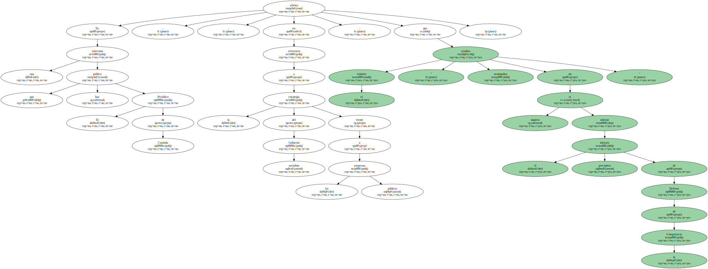
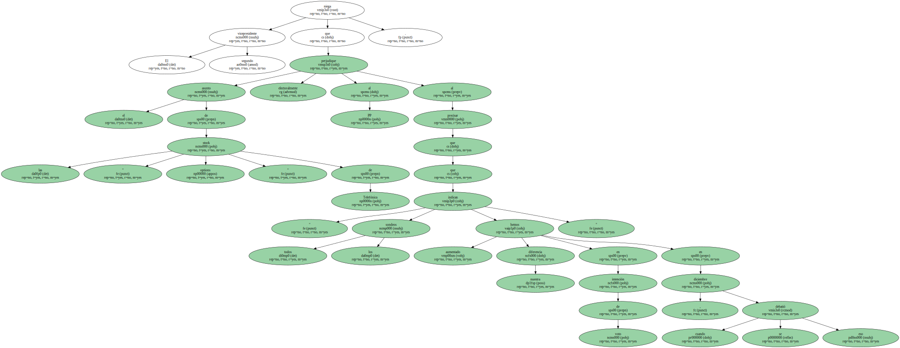
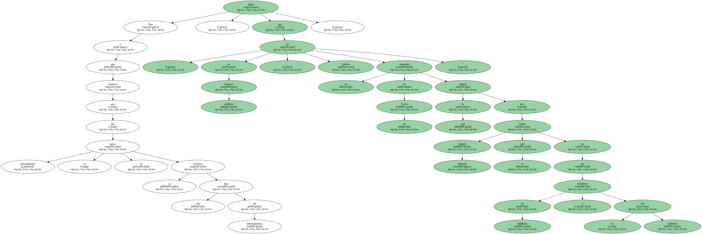
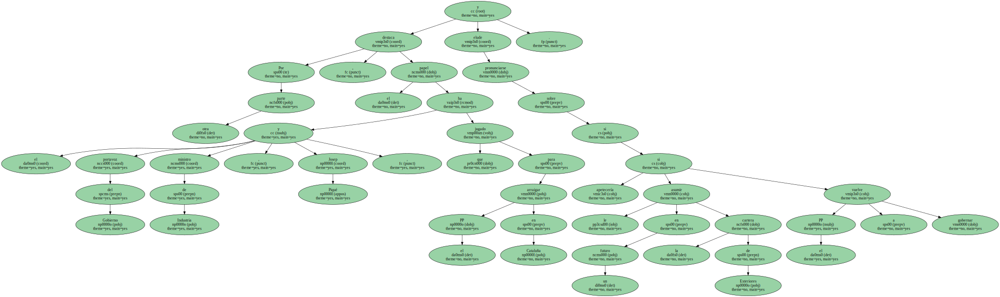
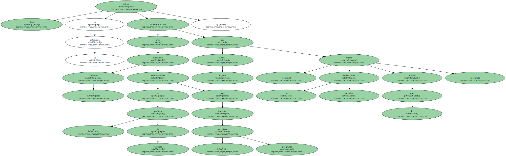
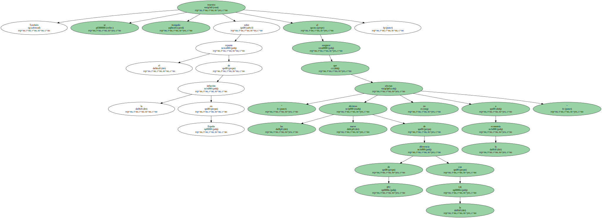

El vicepresidente segundo y ministro de Economía , Rodrigo Rato , considera que el PSOE incurre en " cinismo " al criticar la actual política de liberalización de sectores públicos ya que " antes se hacían los núcleos duros de compañías como Repsol y Telefónica almorzando en La Moncloa ".
En una entrevista que publica hoy El Periódico de Cataluña , el ministro afirma , en referencia a la estrategia del Gobierno socialista frente a las empresas públicas , que " vendían monopolios sin ni siquiera solicitar el informe preceptivo de Defensa de la Competencia ".
Rato defiende el sistema de Oferta Pública de Venta utilizado por el Gobierno del PP frente a la política de fomento de " núcleos estables " practicada por el Ejecutivo del PSOE , además de mostrarse muy crítico sobre los ataques de los socialistas hacia el reparto de las opciones sobre acciones aprobado por Telefónica.

El vicepresidente segundo niega que el asunto de las " stock options " de Telefónica perjudique electoralmente al PP al precisar que " todos los sondeos indican que hemos aumentado nuestra diferencia en intención de voto en diciembre , cuando se debatió eso ".
Pese a que reconoce que personalmente no le gusta que se incentive este tipo de remuneraciones , indica que " en términos políticos , ha habido un momento en las Cortes en que parecía que Joaquín Almunia lo que quería era ser presidente de Telefónica y no del Gobierno ".
Por otra parte , destaca el papel que el portavoz del Gobierno y ministro de Industria , Josep Piqué , ha jugado para arraigar el PP en Cataluña y elude pronunciarse sobre si le apetecería asumir en un futuro la cartera de Exteriores si el PP vuelve a gobernar.
Rato afirma en la entrevista que el Gobierno introducirá modificaciones en la política de vivienda para fomentar la movilidad geográfica y que " hemos bajado las cotizaciones sociales lo que hemos podido ".
También se muestra tranquilo sobre el repunte de la inflación en España al asegurar que " las nueve décimas de diferencia de IPC con la UE no afectan a la economía ".
